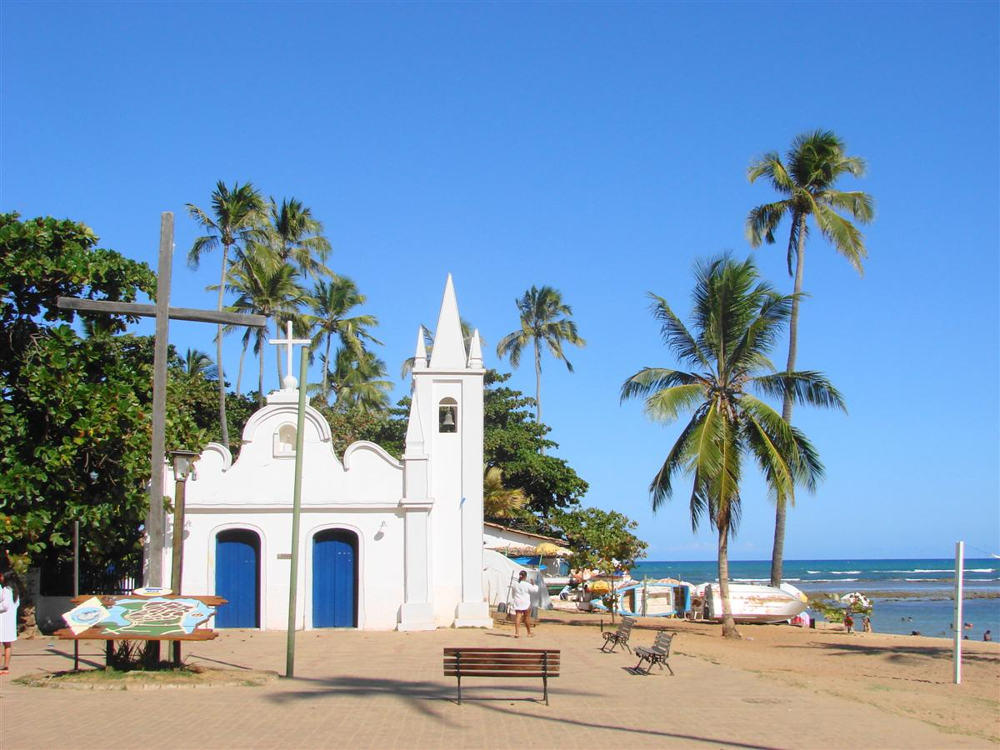

Descobrindo as Praias do Nordeste
O Nordeste brasileiro guarda alguns dos trechos de litoral mais bonitos do planeta. Areias branquinhas, águas mornas em tons de turquesa e coqueiros balançando ao vento formam um cenário que parece ter saído de um cartão-postal. Neste post vamos falar sobre algumas praias menos conhecidas que valem muito a visita.
Localizada no litoral norte do estado da Bahia, a Praia do Forte é um distrito do município de Mata de São João, a 80 km de distância de Salvador. A orla da Praia do Forte possui apenas 14 km, mas a visita compensa muito. Há diversos cardumes coloridos em suas águas cristalinas, além do belo cenário com muitos coqueirais e piscinas naturais. A praia conta com toda a infraestrutura para receber os turistas: ótimos restaurantes, maravilhosos hotéis e passeios incríveis.
